Table Of Contents
Previous topic
Special functions (scipy.special)
Next topic
Integration (scipy.integrate)¶
The scipy.integrate sub-package provides several integration techniques including an ordinary differential equation integrator. An overview of the module is provided by the help command:
>>> help(integrate)
Methods for Integrating Functions given function object.
quad -- General purpose integration.
dblquad -- General purpose double integration.
tplquad -- General purpose triple integration.
fixed_quad -- Integrate func(x) using Gaussian quadrature of order n.
quadrature -- Integrate with given tolerance using Gaussian quadrature.
romberg -- Integrate func using Romberg integration.
Methods for Integrating Functions given fixed samples.
trapz -- Use trapezoidal rule to compute integral from samples.
cumtrapz -- Use trapezoidal rule to cumulatively compute integral.
simps -- Use Simpson's rule to compute integral from samples.
romb -- Use Romberg Integration to compute integral from
(2**k + 1) evenly-spaced samples.
See the special module's orthogonal polynomials (special) for Gaussian
quadrature roots and weights for other weighting factors and regions.
Interface to numerical integrators of ODE systems.
odeint -- General integration of ordinary differential equations.
ode -- Integrate ODE using VODE and ZVODE routines.
General integration (quad)¶
The function quad is provided to integrate a function of one
variable between two points. The points can be 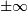
( inf) to indicate infinite limits. For example,
suppose you wish to integrate a bessel function jv(2.5,x) along
the interval 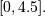
inf) to indicate infinite limits. For example,
suppose you wish to integrate a bessel function jv(2.5,x) along
the interval 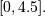
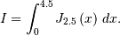
This could be computed using quad:
>>> result = integrate.quad(lambda x: special.jv(2.5,x), 0, 4.5)
>>> print result
(1.1178179380783249, 7.8663172481899801e-09)
>>> I = sqrt(2/pi)*(18.0/27*sqrt(2)*cos(4.5)-4.0/27*sqrt(2)*sin(4.5)+
sqrt(2*pi)*special.fresnel(3/sqrt(pi))[0])
>>> print I
1.117817938088701
>>> print abs(result[0]-I)
1.03761443881e-11
The first argument to quad is a “callable” Python object (i.e a function, method, or class instance). Notice the use of a lambda- function in this case as the argument. The next two arguments are the limits of integration. The return value is a tuple, with the first element holding the estimated value of the integral and the second element holding an upper bound on the error. Notice, that in this case, the true value of this integral is
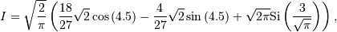
where
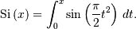
is the Fresnel sine integral. Note that the numerically-computed integral is within 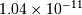 of the exact result — well below the reported error bound.
If the function to integrate takes additional parameters, the can be provided in the args argument. Suppose that the following integral shall be calculated:
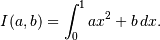
This integral can be evaluated by using the following code:
>>> from scipy.integrate import quad
>>> def integrand(x, a, b):
... return a * x + b
>>> a = 2
>>> b = 1
>>> I = quad(integrand, 0, 1, args=(a,b))
>>> I = (2.0, 2.220446049250313e-14)
Infinite inputs are also allowed in quad by using
inf as one of the arguments. For example, suppose that a numerical
value for the exponential integral:
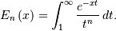
is desired (and the fact that this integral can be computed as special.expn(n,x) is forgotten). The functionality of the function special.expn can be replicated by defining a new function vec_expint based on the routine quad:
>>> from scipy.integrate import quad
>>> def integrand(t,n,x):
... return exp(-x*t) / t**n
>>> def expint(n,x):
... return quad(integrand, 1, Inf, args=(n, x))[0]
>>> vec_expint = vectorize(expint)
>>> vec_expint(3,arange(1.0,4.0,0.5))
array([ 0.1097, 0.0567, 0.0301, 0.0163, 0.0089, 0.0049])
>>> special.expn(3,arange(1.0,4.0,0.5))
array([ 0.1097, 0.0567, 0.0301, 0.0163, 0.0089, 0.0049])
The function which is integrated can even use the quad argument (though the error bound may underestimate the error due to possible numerical error in the integrand from the use of quad ). The integral in this case is
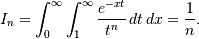
>>> result = quad(lambda x: expint(3, x), 0, inf)
>>> print result
(0.33333333324560266, 2.8548934485373678e-09)
>>> I3 = 1.0/3.0
>>> print I3
0.333333333333
>>> print I3 - result[0]
8.77306560731e-11
This last example shows that multiple integration can be handled using repeated calls to quad.
General multiple integration (dblquad, tplquad, nquad)¶
The mechanics for double and triple integration have been wrapped up into the functions dblquad and tplquad. These functions take the function to integrate and four, or six arguments, respecively. The limits of all inner integrals need to be defined as functions.
An example of using double integration to compute several values of 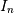 is shown below:
>>> from scipy.integrate import quad, dblquad
>>> def I(n):
... return dblquad(lambda t, x: exp(-x*t)/t**n, 0, Inf, lambda x: 1, lambda x: Inf)
>>> print I(4)
(0.25000000000435768, 1.0518245707751597e-09)
>>> print I(3)
(0.33333333325010883, 2.8604069919261191e-09)
>>> print I(2)
(0.49999999999857514, 1.8855523253868967e-09)
As example for non-constant limits consider the integral
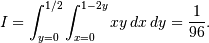
This integral can be evaluated using the expression below (Note the use of the non-constant lambda functions for the upper limit of the inner integral):
>>> from scipy.integrate import dblquad
>>> area = dblquad(lambda x, y: x*y, 0, 0.5, lambda x: 0, lambda x: 1-2*x)
>>> area
(0.010416666666666668, 1.1564823173178715e-16)
For n-fold integration, scipy provides the function nquad. The integration bounds are an iterable object: either a list of constant bounds, or a list of functions for the non-constant integration bounds. The order of integration (and therefore the bounds) is from the innermost integral to the outermost one.
The integral from above
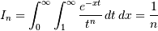
can be calculated as
>>> from scipy import integrate
>>> N = 5
>>> def f(t, x):
>>> return np.exp(-x*t) / t**N
>>> integrate.nquad(f, [[1, np.inf],[0, np.inf]])
(0.20000000000002294, 1.2239614263187945e-08)
Note that the order of arguments for f must match the order of the
integration bounds; i.e. the inner integral with respect to 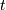 is on
the interval 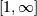 and the outer integral with respect to
 is on the interval 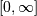.
is on the interval 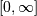.
Non-constant integration bounds can be treated in a similar manner; the example from above
can be evaluated by means of
>>> from scipy import integrate
>>> def f(x,y):
>>> return x*y
>>> def bounds_y():
>>> return [0, 0.5]
>>> def bounds_x(y):
>>> return [0, 1-2*y]
>>> integrate.nquad(f, [bounds_x, bounds_y])
(0.010416666666666668, 4.101620128472366e-16)
which is the same result as before.
Gaussian quadrature¶
A few functions are also provided in order to perform simple Gaussian quadrature over a fixed interval. The first is fixed_quad which performs fixed-order Gaussian quadrature. The second function is quadrature which performs Gaussian quadrature of multiple orders until the difference in the integral estimate is beneath some tolerance supplied by the user. These functions both use the module special.orthogonal which can calculate the roots and quadrature weights of a large variety of orthogonal polynomials (the polynomials themselves are available as special functions returning instances of the polynomial class — e.g. special.legendre).
Romberg Integration¶
Romberg’s method [WPR] is another method for numerically evaluating an integral. See the help function for romberg for further details.
Integrating using Samples¶
If the samples are equally-spaced and the number of samples available
is 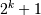 for some integer  , then Romberg romb
integration can be used to obtain high-precision estimates of the
integral using the available samples. Romberg integration uses the
trapezoid rule at step-sizes related by a power of two and then
performs Richardson extrapolation on these estimates to approximate
the integral with a higher-degree of accuracy.
, then Romberg romb
integration can be used to obtain high-precision estimates of the
integral using the available samples. Romberg integration uses the
trapezoid rule at step-sizes related by a power of two and then
performs Richardson extrapolation on these estimates to approximate
the integral with a higher-degree of accuracy.
In case of arbitrary spaced samples, the two functions trapz (defined in numpy [NPT]) and simps are available. They are using Newton-Coates formulas of order 1 and 2 respectively to perform integration. The trapezoidal rule approximates the function as a straight line between adjacent points, while Simpson’s rule approximates the function between three adjacent points as a parabola.
For an odd number of samples that are equally spaced Simpson’s rule is exact if the function is a polynomial of order 3 or less. If the samples are not equally spaced, then the result is exact only if the function is a polynomial of order 2 or less.
>>> from scipy.integrate import simps
>>> import numpy as np
>>> def f(x):
... return x**2
>>> def f2(x):
... return x**3
>>> x = np.array([1,3,4])
>>> y1 = f1(x)
>>> I1 = integrate.simps(y1,x)
>>> print(I1)
21.0
This corresponds exactly to
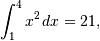
whereas integrating the second function
>>> y2 = f2(x)
>>> I2 = integrate.simps(y2,x)
>>> print(I2)
61.5
does not correspond to
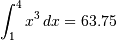
because the order of the polynomial in f2 is larger than two.
Ordinary differential equations (odeint)¶
Integrating a set of ordinary differential equations (ODEs) given initial conditions is another useful example. The function odeint is available in SciPy for integrating a first-order vector differential equation:
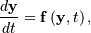
given initial conditions 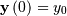, where
 is a length
is a length  vector and 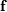
is a mapping from 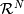 to 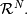
A higher-order ordinary differential equation can always be reduced to
a differential equation of this type by introducing intermediate
derivatives into the vector.
vector and 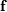
is a mapping from 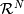 to 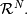
A higher-order ordinary differential equation can always be reduced to
a differential equation of this type by introducing intermediate
derivatives into the vector.
For example suppose it is desired to find the solution to the following second-order differential equation:
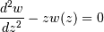
with initial conditions 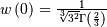 and 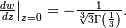 It is known that the solution to this differential equation with these boundary conditions is the Airy function
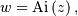
which gives a means to check the integrator using special.airy.
First, convert this ODE into standard form by setting 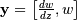 and 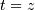. Thus, the differential equation becomes
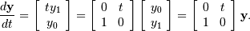
In other words,
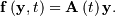
As an interesting reminder, if 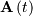 commutes with 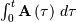 under matrix multiplication, then this linear differential equation has an exact solution using the matrix exponential:
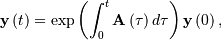
However, in this case, and its integral do not commute.
There are many optional inputs and outputs available when using odeint which can help tune the solver. These additional inputs and outputs are not needed much of the time, however, and the three required input arguments and the output solution suffice. The required inputs are the function defining the derivative, fprime, the initial conditions vector, y0, and the time points to obtain a solution, t, (with the initial value point as the first element of this sequence). The output to odeint is a matrix where each row contains the solution vector at each requested time point (thus, the initial conditions are given in the first output row).
The following example illustrates the use of odeint including the
usage of the Dfun option which allows the user to specify a gradient
(with respect to ) of the function,
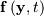.
>>> from scipy.integrate import odeint
>>> from scipy.special import gamma, airy
>>> y1_0 = 1.0/3**(2.0/3.0)/gamma(2.0/3.0)
>>> y0_0 = -1.0/3**(1.0/3.0)/gamma(1.0/3.0)
>>> y0 = [y0_0, y1_0]
>>> def func(y, t):
... return [t*y[1],y[0]]
>>> def gradient(y,t):
... return [[0,t],[1,0]]
>>> x = arange(0,4.0, 0.01)
>>> t = x
>>> ychk = airy(x)[0]
>>> y = odeint(func, y0, t)
>>> y2 = odeint(func, y0, t, Dfun=gradient)
>>> print ychk[:36:6]
[ 0.355028 0.339511 0.324068 0.308763 0.293658 0.278806]
>>> print y[:36:6,1]
[ 0.355028 0.339511 0.324067 0.308763 0.293658 0.278806]
>>> print y2[:36:6,1]
[ 0.355028 0.339511 0.324067 0.308763 0.293658 0.278806]